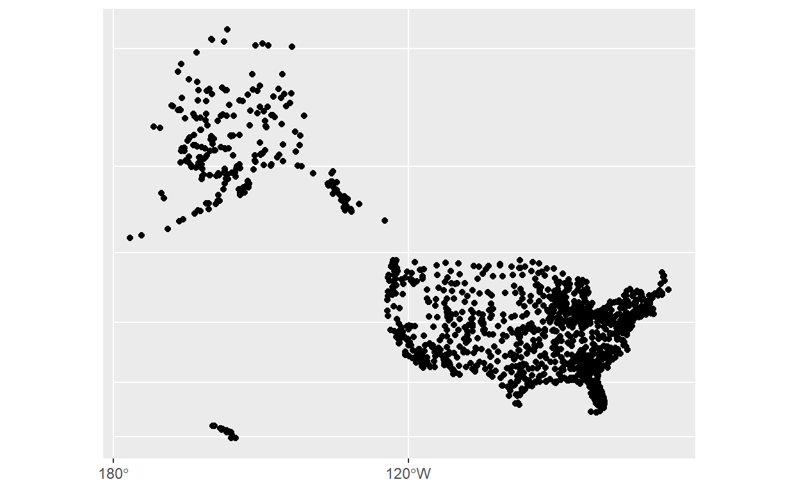
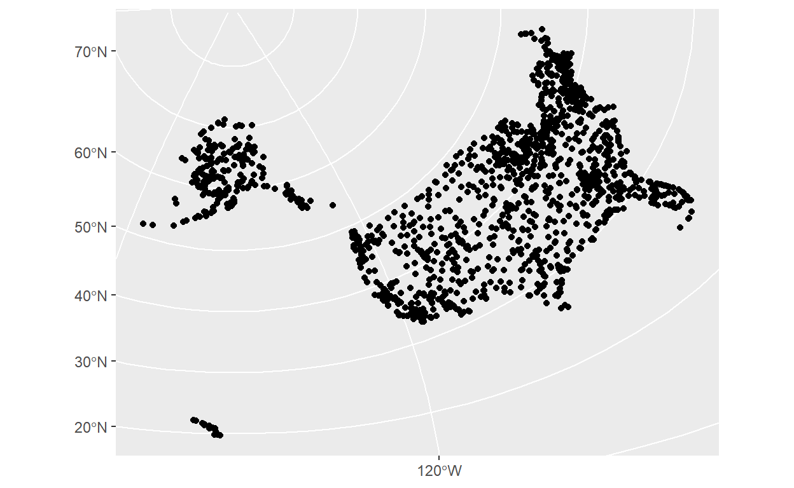
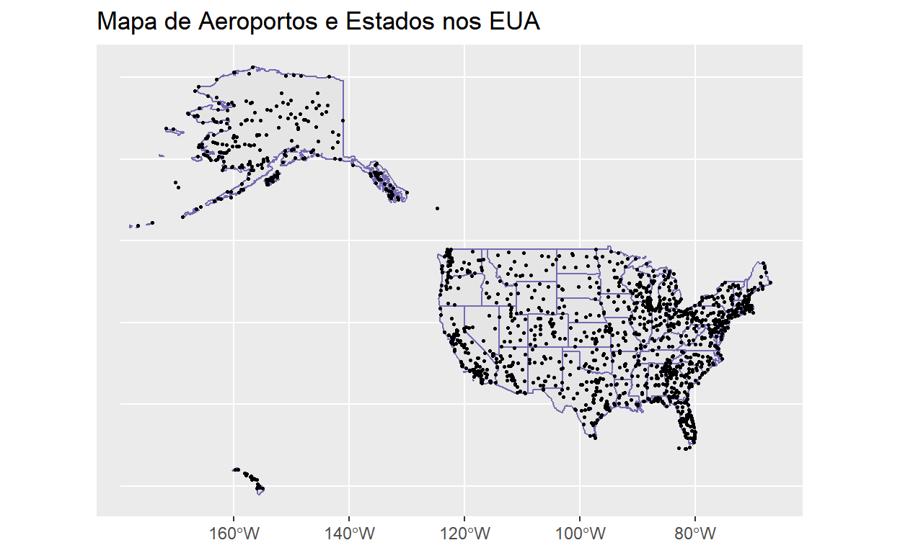
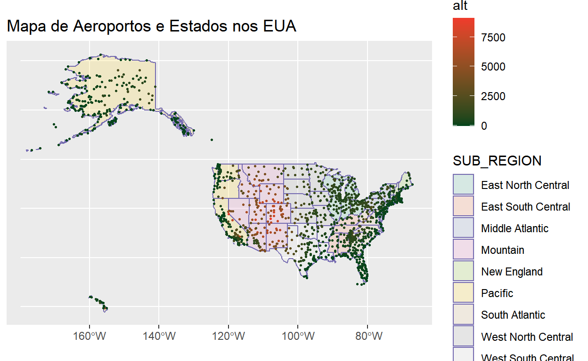
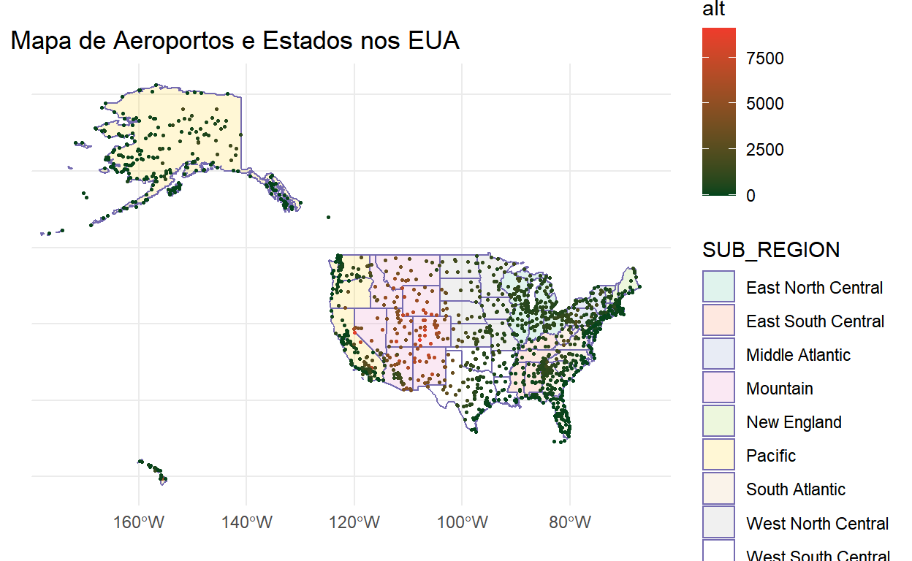
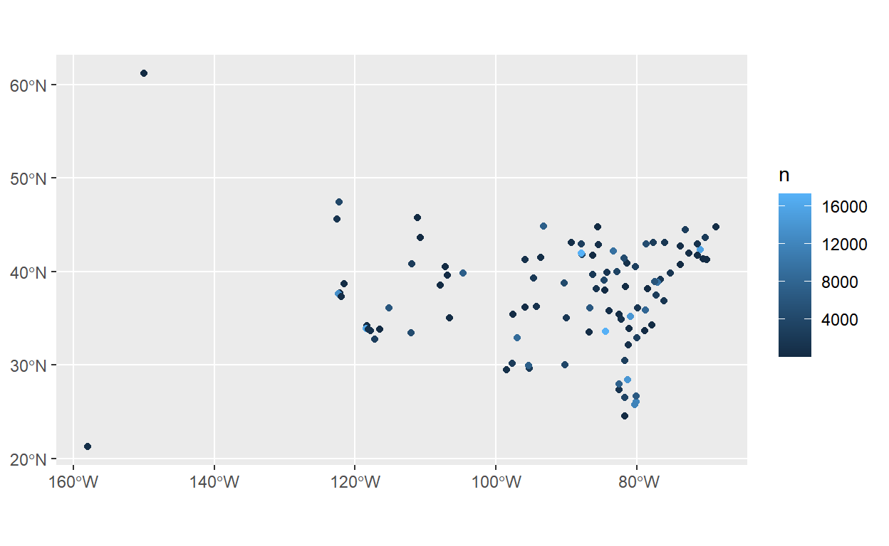
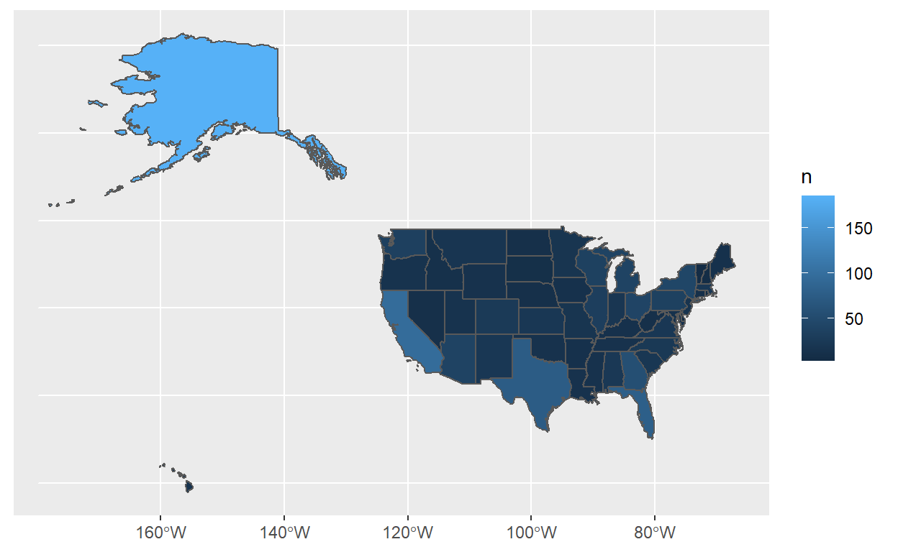
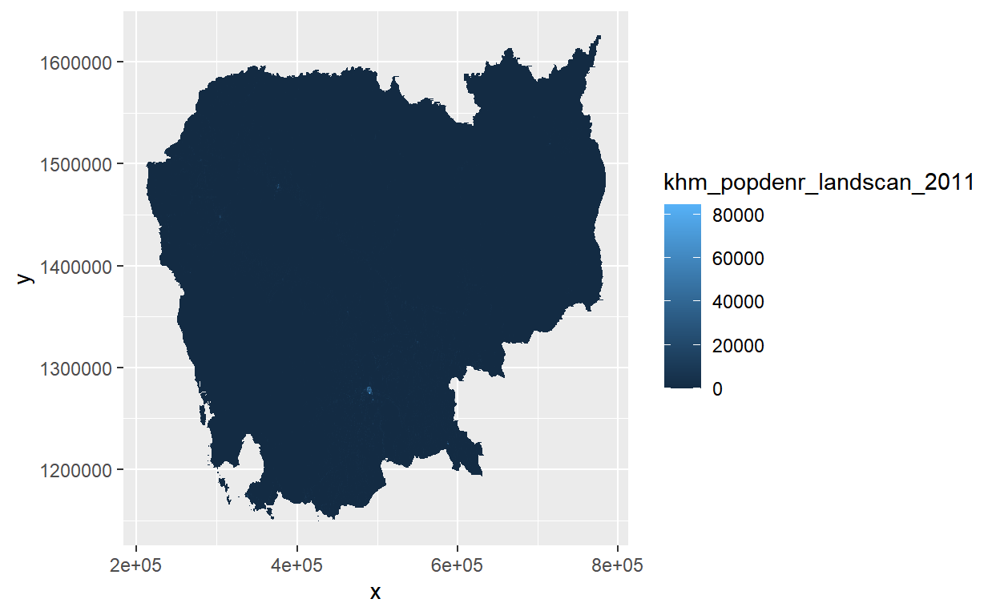
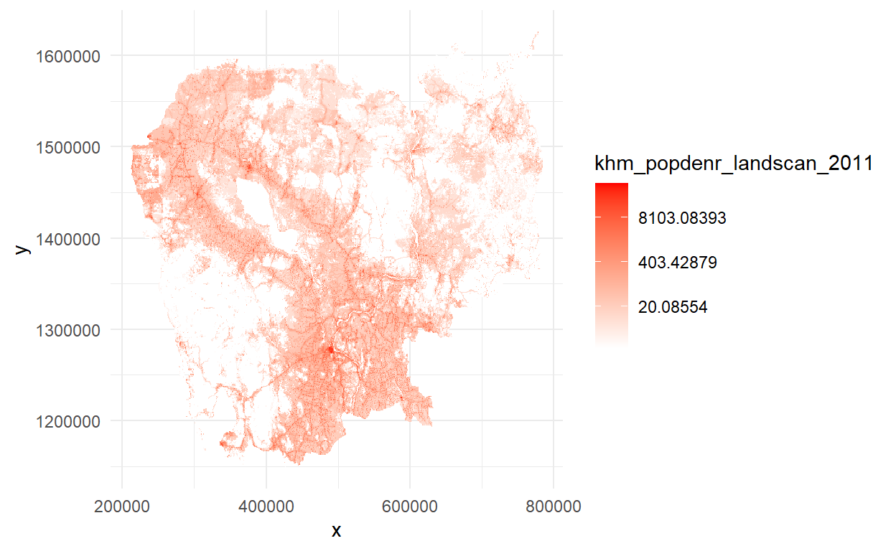

Clique aqui para assistir o vídeo da aula online do dia 21 de maio de 2021. E o chat.
Dados espaciais são dados organizados por localização e permitem novos tipos de análise e visualização. Explorar mapas em R nos permite praticar e estender muitas das ferramentas que aprendemos nas últimas semanas - manipulação de dados, joins e gráficos.
O que diferencia dados espaciais de outros tipos de dados? Dados espaciais contém variáveis que identificam a localização de cada ponto no mundo, como a latitude e a longitude: 13 \(^\circ\) 26’ 22" N, 17 \(^\circ\) 8’ 21" E. Estes valores nos permitem localizar um ponto no mundo, comparar com outros pontos, e visualizar os pontos num mapa de duas dimensões.
Lembre-se do nosso tibble de airports do tutorial passado? Ele contém a localização dos aeroportos nos Estados Unidos nas colunas ‘lat’ e ‘lon’. Como podemos analisar estes dados espaciais?
airports
Para analisar estes dados como dados espaciais precisamos dizer ao R quais são as variáveis de localização. Isto exige uma nova biblioteca: sf, acrônimo para ‘simple features’, o nosso objeto espacial. Também recomendo instalar mais dois pacotes
O sf traz mais poder para os nossos tibbles, permitindo eles entenderem dados espaciais. Para facilitar, todas as nossas operações com dados espaciais começam com st_ (e não sf…absurdamente). Só temos que indicar para o R quais variáveis do tibble original são a longitude e a latitude das observações, usando a função st_as_sf(). O argumento coords= aceita um vetor com os nomes das duas colunas, longitude e latitude (nesta ordem, pois longitude é o eixo X e latitude é o eixo Y - se pensarmos nas coordenadas como pontos cartesianos).
Como fica o nosso tibble airports_test agora? Abra o tibble para ver. Parece quase igual…e isso é importante - dados espaciais não são muito diferentes de outros dados; eles ainda ficam armazenados num tibble. Cada observação tem várias colunas de dados não-espaciais (‘faa’, ‘name’ etc.). Mas agora há uma nova coluna também, geometry. Ela codifica os dados de longitude e latitude num formato mais complexo que facilita operações e visualizações espaciais. Veja que o valor de cada observação da geometry é o par longitude-latitude e o tipo de dado espacial é um ponto, <POINT>, (vamos ver alternativas em breve).
airports_test
Simple feature collection with 1458 features and 11 fields
Geometry type: POINT
Dimension: XY
Bounding box: xmin: -176.646 ymin: 19.72137 xmax: 174.1136 ymax: 72.27083
CRS: NA
# A tibble: 1,458 x 12
dest name alt tz dst tzone caracteres string_field
<chr> <chr> <dbl> <dbl> <chr> <chr> <int> <lgl>
1 04G Lansdowne ~ 1044 -5 A Americ~ 17 FALSE
2 06A Moton Fiel~ 264 -6 A Americ~ 29 TRUE
3 06C Schaumburg~ 801 -6 A Americ~ 19 FALSE
4 06N Randall Ai~ 523 -5 A Americ~ 15 FALSE
5 09J Jekyll Isl~ 11 -5 A Americ~ 21 FALSE
6 0A9 Elizabetht~ 1593 -5 A Americ~ 30 FALSE
7 0G6 Williams C~ 730 -5 A Americ~ 23 FALSE
8 0G7 Finger Lak~ 492 -5 A Americ~ 29 FALSE
9 0P2 Shoestring~ 1000 -5 U Americ~ 28 FALSE
10 0S9 Jefferson ~ 108 -8 A Americ~ 21 FALSE
# ... with 1,448 more rows, and 4 more variables:
# nome_parcial <list>, nome_parcial_primeiro <chr>,
# nome_parcial_final <chr>, geometry <POINT>Verifique o tipo do objeto airports_test:
class(airports_test)
[1] "sf" "tbl_df" "tbl" "data.frame"Temos vários resultados aqui - é um objeto ‘simple features’, mas também um tbl (tibble) e data.frame! Isso significa que podemos aplicar todas as funções do tidyverse com dados espaciais também.
O que podemos fazer com o nosso tibble de airports_test extra-poderoso e espacialmente-habilitada? Muitas coisas, e vamos ver as possibilidades abaixo, mas por enquanto, vamos visualizar os nossos dados num mapa simples. A nossa gramática de gráficos ggplot() facilita a visualização de dados espaciais no formato bem conhecido, com uma geometria específica: geom_sf(), e graças a muito trabalho de pessoas desconhecidas, não precisamos especificar nenhum argumento:
É isso mesmo. você já criou o seu primeiro mapa, parabéns! O que está acontecendo no seu gráfico, você consegue interpretar? Veja que o eixo x mostra os valores de longitude, e o eixo y os valores de latitude. Aparece um ponto (a geometria) em cada lugar apropriado.
A beleza de trabalhar com dados espaciais em nosso formato padrão de um tibble é que podemos aplicar todas as nossas ferramentas normais para transformar e preparar os dados. Por exemplo, vamos limitar o escopo dos dados para os fusos horários dos Estados Unidos continental (e tirando alguns aeroportos específicos mal-codificados).
Faz mais sentido agora, certo?
O mapa que geramos acima é apenas uma das milhares de formas de apresentar os mesmos lugares num mapa. E todos são igualmente corretos. Não existe uma representação única e correta de dados espaciais na sua tela.
Por quê? Porque o mundo não é plano. E representar locais que existem numa esfera (na verdade, uma esferóide oblato) em papel ou na sua tela em duas dimensões não tem uma solução única. Existem milhares de possibilidades de como transformar um objeto de três dimensões para duas, e esse processo sempre gera algum tipo de distorção. Algumas das transformações têm nomes conhecidos, como ‘Mercator’ ou ‘Robinson’, cada um representando um ‘sistema de coordenadas’ (CRS, Coordinate Reference System).
O CRS pode parecer complicado, mas não se preocupe, não precisamos entender os detalhes. Só temos que verificar três coisas:
1. Saber o CRS dos nossos dados brutos. Mesmo que o padrão seja salvar dados espaciais com longitude e latitude, às vezes, eles se apresentam em outro formato. É comum também haver outros detalhes para especificar para interpretar a longitude e a latitude, como quão ‘esmagada’ é o mundo de uma esfera perfeita.
Então deveríamos ter gerado o banco espacial de airports especificando o CRS dos dados no arquivo, com o argumento de CRS:
Por que ‘4326’? Idealmente, deveríamos confirmar com o fornecedor dos dados o CRS em que eles foram salvos. Aqui, como a longitude e a latitude parecem estar em graus (entre -180 e 180) é provável que devemos usar o sistema “WGS84” (um sistema de coordenadas geográficas (não projetadas)). Um atalho para especificar o WGS84 é usar o numero 4326 (tecnicamente, o número ‘epsg’) no argumento crs. Para verificar outros atalhos para sistemas de coordenados, pode aproveitar do site http://epsg.io/.
Abre o airports e vai aparecer uma linha de CRS agora na descrição acima da tabela:
airports
Simple feature collection with 1454 features and 11 fields
Geometry type: POINT
Dimension: XY
Bounding box: xmin: -176.646 ymin: 19.72137 xmax: -67.01269 ymax: 71.28545
Geodetic CRS: WGS 84
# A tibble: 1,454 x 12
dest name alt tz dst tzone caracteres string_field
* <chr> <chr> <dbl> <dbl> <chr> <chr> <int> <lgl>
1 04G Lansdowne ~ 1044 -5 A Americ~ 17 FALSE
2 06A Moton Fiel~ 264 -6 A Americ~ 29 TRUE
3 06C Schaumburg~ 801 -6 A Americ~ 19 FALSE
4 06N Randall Ai~ 523 -5 A Americ~ 15 FALSE
5 09J Jekyll Isl~ 11 -5 A Americ~ 21 FALSE
6 0A9 Elizabetht~ 1593 -5 A Americ~ 30 FALSE
7 0G6 Williams C~ 730 -5 A Americ~ 23 FALSE
8 0G7 Finger Lak~ 492 -5 A Americ~ 29 FALSE
9 0P2 Shoestring~ 1000 -5 U Americ~ 28 FALSE
10 0S9 Jefferson ~ 108 -8 A Americ~ 21 FALSE
# ... with 1,444 more rows, and 4 more variables:
# nome_parcial <list>, nome_parcial_primeiro <chr>,
# nome_parcial_final <chr>, geometry <POINT [°]>2. Escolher o CRS em que queremos visualizar os nossos dados. Quando chamamos geom_sf, ele usa o CRS definido em nosso tibble. Mas em qualquer momento podemos transformar o CRS atual para um alternativo, por exemplo um CRS que melhor representa um lugar específico no mundo. Usamos st_transform() em nosso pipe de trabalho para alterar o CRS, especificando o novo número da projeção desejada.
Por exemplo, a projeção Mercator tem número 3857:
airports %>% st_transform(3857) %>%
ggplot() +
geom_sf()

Uma projeçõ focada nos Estados Unidos, 3751:
airports %>% st_transform(3751) %>%
ggplot() +
geom_sf()

3. Que todas as camadas da nossa análise/visualização usem a mesma projeção. Na mesma forma que não podemos comparar kilometros e milhas diretamente, seria errado comparar dados em CRS diferentes. O mesmo local vai aparece em posições diferentes. Temos que usar st_transform() para padronizar camadas múltiplas antes de visualização.
O CRS é especialmente relevante quando precisamos calcular distâncias de observações espaciais. O CRS 4326 é geográfico (sem projeção, em três dimensões) então a unidade de distância segue a curvatura do mundo, e reflete o ‘Great Circle Distance’.
Em contraste, quando usamos st_transform() e apontamos um CRS diferente e projetado, os locais ficam num plano de duas dimensões e as medidas de distância são linhas retas, ‘Euclidean Distance’.
Há muitas possibilidades para calcular distâncias, mas vamos usar uma função simples para calcular a distância entre todos os aeroportos, st_distance(). Ela não precisa de nenhum argumento, mas vamos pegar uma amostra aleatória de 10 aeroportos primeiramente para não sobrecarregar os nossos computadores e deixar o resultado mais simples de interpretar:
airports %>% sample_n(10) %>%
st_distance()
Units: [m]
[,1] [,2] [,3] [,4] [,5] [,6] [,7]
[1,] 0.0 554538.1 4798793 1913888.0 1205965 2318248.7 1563995
[2,] 554538.1 0.0 4763157 2355346.3 1758205 2714593.3 1031577
[3,] 4798792.7 4763157.1 0 6328121.1 4920272 6802931.2 4476927
[4,] 1913888.0 2355346.3 6328121 0.0 1418429 475124.5 3367940
[5,] 1205964.8 1758205.3 4920272 1418429.2 0 1892554.9 2730290
[6,] 2318248.7 2714593.3 6802931 475124.5 1892555 0.0 3698379
[7,] 1563995.0 1031577.2 4476927 3367940.0 2730290 3698378.8 0
[8,] 393819.1 792451.8 5178362 1568659.5 1160062 1949778.2 1820289
[9,] 1073067.8 878276.7 3886690 2969039.7 1961064 3387124.4 1039313
[10,] 2200222.7 2752509.7 5600410 1283901.3 1050086 1629985.1 3756376
[,8] [,9] [,10]
[1,] 393819.1 1073067.8 2200223
[2,] 792451.8 878276.7 2752510
[3,] 5178362.4 3886689.9 5600410
[4,] 1568659.5 2969039.7 1283901
[5,] 1160062.2 1961064.5 1050086
[6,] 1949778.2 3387124.4 1629985
[7,] 1820288.6 1039313.3 3756376
[8,] 0.0 1459591.2 2043639
[9,] 1459591.2 0.0 3009856
[10,] 2043639.0 3009855.7 0O resultado é uma ‘matriz’ (um tibble com apenas números), com a unidade da mensuração em metros, especificada no início (‘Units: [m]’). Como lemos o resultado? Entre os aeroportos 1 e 2 há uma distância de 555.409,9 metros, 555km. (Se quiser, pode transformar a matriz em um tibble com ...%>% as_tibble()).
Observe que usando uma projeção diferente gera um resultado diferente, de 702.038,3 metros:
set.seed(3)
airports %>% st_transform(3751) %>%
sample_n(10) %>%
st_distance()
Units: [m]
1 2 3 4 5 6 7
1 0.0 702038.3 5213125 2842651.6 1598134 3614011.7 1893157
2 702038.3 0.0 5114472 3430466.2 2288940 4146583.9 1228230
3 5213124.6 5114472.3 0 7585593.3 5442296 8456120.2 4673834
4 2842651.6 3430466.2 7585593 0.0 2165714 873406.6 4653090
5 1598134.1 2288940.5 5442296 2165714.2 0 3038716.4 3393833
6 3614011.7 4146583.9 8456120 873406.6 3038716 0.0 5346662
7 1893157.1 1228230.3 4673834 4653089.6 3393833 5346662.4 0
8 520013.0 1029592.3 5722683 2402063.8 1577330 3137347.2 2256405
9 1302056.7 1046320.4 4068152 4108065.6 2443465 4903992.9 1188353
10 3066120.6 3766750.3 6400684 2073004.6 1502381 2772431.3 4895375
8 9 10
1 520013 1302057 3066121
2 1029592 1046320 3766750
3 5722683 4068152 6400684
4 2402064 4108066 2073005
5 1577330 2443465 1502381
6 3137347 4903993 2772431
7 2256405 1188353 4895375
8 0 1812885 2929667
9 1812885 0 3925697
10 2929667 3925697 0Exercício 1: Mapas de Pontos
simple features com os seguintes dados. Os valores de longitude e latitude são brutos em CRS 4326.| Cidade | Pais | População | Long | Lat |
|---|---|---|---|---|
| Paris | France | 12006868 | 2.352552 | 48.85771 |
| London | United Kingdom | 11984435 | -0.128285 | 51.50724 |
| Istanbul | Turkey | 11400000 | 28.976636 | 41.00799 |
| Madrid | Spain | 6633278 | -3.708597 | 40.41167 |
| Berlin | Germany | 5142247 | 13.402067 | 52.52013 |
ggplot(), com uma cor diferente para cada ponto baseado na variável População.cidades %>%
ggplot() + geom_sf(aes(colour = População)) + theme_minimal()remove=FALSE para preservar as colunas de longitude e latitude explicitamente. Use essas duas colunas para adicionar mais uma camada de geometria (geom_text()) que imprime os rótulos dos nomes das cidades ao seu mapa.cidades %>%
ggplot() + geom_sf(aes(colour = População)) + geom_text(aes(x = Long,
y = (Lat - 0.5), label = Cidade)) + theme_minimal()cidades %>%
st_transform(23035) %>%
ggplot() + geom_sf(aes(colour = População)) + theme_minimal()cidades %>%
st_transform(23035) %>%
st_distance() %>%
as_tibble()
Áreas administrativas são geralmente representadas como polígonos em mapas. Em geral, obtemos esses polígonos como ‘shapefiles’ produzidos por uma agência oficial. Podemos abrir qualquer tipo de shapefile (pontos, linhas ou polígonos) com a função st_read. Vamos abrir um shapefile (simplificado) dos estados dos Estados Unidos, do link aqui. Baixe o arquivo e abre com st_read:
states <- st_read("states.shp")
Abra o nosso objeto states para ver o conteúdo:
states
Simple feature collection with 51 features and 5 fields
Geometry type: MULTIPOLYGON
Dimension: XY
Bounding box: xmin: -178.2176 ymin: 18.92179 xmax: -66.96927 ymax: 71.40624
Geodetic CRS: NAD83
First 10 features:
STATE_NAME DRAWSEQ STATE_FIPS SUB_REGION STATE_ABBR
1 Hawaii 1 15 Pacific HI
2 Washington 2 53 Pacific WA
3 Montana 3 30 Mountain MT
4 Maine 4 23 New England ME
5 North Dakota 5 38 West North Central ND
6 South Dakota 6 46 West North Central SD
7 Wyoming 7 56 Mountain WY
8 Wisconsin 8 55 East North Central WI
9 Idaho 9 16 Mountain ID
10 Vermont 10 50 New England VT
geometry
1 MULTIPOLYGON (((-160.0738 2...
2 MULTIPOLYGON (((-122.402 48...
3 MULTIPOLYGON (((-111.4754 4...
4 MULTIPOLYGON (((-69.77728 4...
5 MULTIPOLYGON (((-98.73044 4...
6 MULTIPOLYGON (((-102.7884 4...
7 MULTIPOLYGON (((-104.0536 4...
8 MULTIPOLYGON (((-87.74856 4...
9 MULTIPOLYGON (((-117.0263 4...
10 MULTIPOLYGON (((-73.25806 4...É um tibble do tipo ‘sf’ também! Observe que o ‘geometry type’ agora é ‘MULTIPOLYGON’, e que ele tem um CRS de NAD83, diferente dos nossos pontos de aeropotos. Temos 51 áreas, uma para cada estado (mais o DF), e uma coluna de ‘geometria’.
Como podemos visualizar este mapa? Exatamente do mesmo modo que antes (pode demorar para abrir):
E se quisermos visualizar ambos os polígonos e os pontos dos aeroportos no mesmo mapa, juntos? Respeitando a nossa regra (3) da lista acima, é essencial padronizar os CRS que estamos trabalhando com a mesma projeção para todas as camadas. Então vamos transformar a projeção de states para o CRS 4326, o mesmo de airports. Sempre que você for trabalhar com diversos dados geográficos a primeira coisa a fazer é padronizar o CRS, para que seja possível visualizar as duas camadas no mesmo mapa e para fazer operações espaciais, como o cálculo da distância.
Para adicionar a camada de aeroportos, é só especificar mais uma camada de geom_sf() com o argumento opcional de data=airports no início. (Isto é uma estratégia geral para adicionar camadas de mais de um banco de dados num gráfico).
Perfeito! Todos os pontos cabem dentro das bordas do país.
Alterar a apresentação dos nossos mapas depende das mesmas habilidades como todos os outros gráficos de ggplot. Vamos adicionar um título, alterar o tamanho dos pontos, e o cor das bordas:
states %>% st_transform(4326) %>%
ggplot() +
geom_sf(colour="#756bb1") +
geom_sf(data=airports, size=0.5) +
ggtitle("Mapa de Aeroportos e Estados nos EUA")

Podemos também alterar a cor da área dos estados dependendo do seu SUB_REGION, com uma escala apropriada, e a cor dos aeroportos dependendo da sua altitude, com uma escala apropriada.
states %>% st_transform(4326) %>%
ggplot() +
geom_sf(aes(fill=SUB_REGION), colour="#756bb1", alpha=0.2) +
scale_fill_brewer(palette="Set2") +
geom_sf(data=airports, aes(colour=alt), size=0.5) +
scale_colour_gradient(low="#00441b", high="#ef3b2c") +
ggtitle("Mapa de Aeroportos e Estados nos EUA")

Com mapas, é frequentemente útil tirar o fundo, os eixos, e os rótulos com theme_minimal():
states %>% st_transform(4326) %>%
ggplot() +
geom_sf(aes(fill=SUB_REGION), colour="#756bb1", alpha=0.2) +
scale_fill_brewer(palette="Set2") +
geom_sf(data=airports, aes(colour=alt), size=0.5) +
scale_colour_gradient(low="#00441b", high="#ef3b2c") +
ggtitle("Mapa de Aeroportos e Estados nos EUA") +
theme_minimal()

Até agora, os nossos dados espaciais já chegaram quase pronto para usar. O que podemos fazer se não tivermos dados espaciais? Temos que criá-los. Podemos usar um aplicativo de celular para capturar dados com GPS, ou podemos ‘georeferenciar’ descrições de lugares, como endereços.
Por exemplo, vamos criar um tibble simples com alguns endereços, e usar a função geocode_OSM do pacote tmaptools para converter o endereço em coordenadas de longitude e latitude. A função usa o banco de dados do Open Street Maps. (Note que a função exige usar o $ de R base para especificar a coluna relevante).
library(tmaptools)
Lugares <- tibble(ID=c(1,2),
Endereço=c("Av. Prof. Luciano Gualberto, 298-460 - Butantã, São Paulo, Brazil",
"Av. Paulista, 1578 - Bela Vista, São Paulo, Brazil"))
Lugares <- geocode_OSM(Lugares$Endereço, projection=4326, as.sf=T)Note que especificamos o CRS (o projection) em que queremos receber os dados, para que ele seja padronizado com as nossas outras camadas. E usamos as.sf=T para que o resultado já é um tibble de simple features pronto para analisar/visualizar.
Como podemos verificar o local dos nossos endereços? É mais fácil com o contexto geográfico, como em google maps, e com um mapa interativo. Geralmente, em relatórios, mapas estáticos são mais apropriados, mas às vezes é útil explorar os nossos dados espaciais interativamente, ou em documentos de HTML. Para isso, usamos a função mapview() no pacote do mesmo nome. É fácil:
Exercício 2: Mapas mais Completos
Europe %>%
st_transform(23035) %>%
ggplot() + geom_sf()
Europe %>%
st_transform(23035) %>%
ggplot() + geom_sf() + geom_sf(data = cidades %>%
st_transform(23035), colour = "blue", size = 2) + ggtitle("Cidades Maiores da Europe") +
theme_minimal()
POP_EST) no mapa, com uma escala e legenda apropriada.Europe %>%
st_transform(23035) %>%
ggplot() + geom_sf(aes(fill = POP_EST)) + geom_sf(data = cidades %>%
st_transform(23035), colour = "blue", size = 2) + ggtitle("Cidades Maiores da Europe") +
theme_minimal() + scale_fill_gradient(low = "#e5f5f9", high = "#00441b")
cidades), adicione os resultados como mais uma camada do seu mapa de Questão 43 com a mesma formatação da camada do resto das cidades.Milan <- geocode_OSM("Piazza del Duomo, 20122 Milano, Italy", projection = 4326,
as.sf = T)
Europe %>%
st_transform(23035) %>%
ggplot() + geom_sf(aes(fill = POP_EST)) + geom_sf(data = cidades %>%
st_transform(23035), colour = "blue", size = 2) + geom_sf(data = Milan %>%
st_transform(23035), colour = "blue", size = 2) + ggtitle("Cidades Maiores da Europe") +
theme_minimal() + scale_fill_gradient(low = "#e5f5f9", high = "#00441b")
Observe que os nossos dados espaciais vêm com uma tabela, e normalmente com um identificador único para cada observação (unidade espacial). Isto abre uma oportunidade - se temos dados não-espaciais que queremos mapear, é fácil torná-los espacial - é só juntar o banco não-espacial com o banco espacial usando o identificador comum, exatamente como discutimos no tutorial anterior. Na prática é muito mais comum pegar um shapefile genêrico de polígonos/pontos, e cruzar com um banco de dados não-espacial.
Por exemplo, queremos mapear o número de voos de Nova Iorque que chegam em cada aeroporto de destino em 2013. Com apenas o banco de dados flights isso seria impossível. Mas em combinação com o nosso banco de airports espacial, é rápido. Primeiro, qual é a unidade espacial de análise que desejamos? É cada aeroporto de destino, então temos que agregar/resumir o banco de dados de flights para cada destino. Por enquanto, pode ser apenas o número de voos:
Segundo, vamos isolar o identificador comum, neste caso o código de aeroporto destino, dest em um banco, faa no outro, e rodar o left_join() como normal. Uma dica - lembre que left_join() preserva a estrutura e atributos do objeto na esquerda. Dado que queremos o resultado do nosso join manter o seu status espacial (de ‘sf’), é sempre uma boa ideia colocar o objeto espacial na esquerda de left_join().
Agora, a coluna ‘n’ está disponível no tibble airports_flights para visualização:
Só temos poucos dos aeroportos no banco de dados flights, então pode ser melhor usar um inner_join() para tirar os aeroportos ausentes:
airports %>% rename(dest=faa) %>%
inner_join(flights_por_dest, by="dest") %>%
ggplot() +
geom_sf(aes(colour=n))

O mundo espacial abre um novo tipo de join entre diversos bancos de dados - joins espaciais que são definidos pela localização semelhante e não por uma chave comum nas tabelas de dados. Existe diversos tipos de joins espaciais mas vamos focar sobre um join entre uma camada de polígonos e uma camada de pontos.
Especificamente, queremos saber quantos aeroportos (pontos) existem em cada estado (polígono). A função para um join espacial é st_join. Como sempre, a regra crucial é que as duas camadas espaciais têm que ter o mesmo CRS, então vamos usar st_transform para padronizar as duas para 4326.
states <- states %>% st_transform(4326)
airports_states <- airports %>%
st_join(states)
Agora, o objeto airports_states contém todos as aeroportos, com colunas adicionais para os detalhes do estado em que o aeroporto fica (geograficamente). Como não haviam estes dados anteriormente, vamos visualizar os aeroportos por ‘SUB_REGION’, uma variável que apenas existia no banco de states, como exemplo:
Qual tipo de unidade espacial é cada observação em airports_states? É um ponto, um aeroporto. Por que não um polígono, como os estados que usamos no st_join? Porque o st_join também faça por padrão um join à esquerda, como left_join, então ele preserva os atributos do objeto na esquerda, neste caso os pontos dos aeroportos.
Se quisermos juntar os dados por estado e manter a geometria dos polígonos dos estados, apenas temos que inverter a ordem dos objetos no st_join:
Agora, o objeto ‘states_airports’ contém os dados de cada estado e colunas adicionais com dados dos aeroportos que ficam (geograficamente) no estado. Obviamente há vários aeroportos por estado, então cada estado está duplicado em diversas observaçoes. Inspecione as colunas da direita de states_airports para ver que cada observação é um aeroporto diferente.
Mas o mesmo polígono do estado duplicado muitas vezes para cada aeroporto não ajuda nada - temos que agregar os nossos dados por estado para deixar um polígono por estado. Por exemplo, para calcular o número de aeroportos por estado, e visualizar o resultado:
states_num_airports <- states_airports %>% group_by(STATE_NAME) %>%
tally()
states_num_airports %>%
ggplot() +
geom_sf(aes(fill=n))

Os joins espaciais ampliam a nossa criatividade, abrindo comparações novas. Há muitas possibilidades, mas o básico é sempre aquilo que descrevemos aqui.
Existem diversas operações espaciais para facilitar análises específicas. O livro aqui, sobretudo capítulos 4 e 5 e o cheatsheet de sf mostram as possibilidades. Por enquanto, vamos ver apenas uma operação que transforma polígonos em pontos. Usamos uma função simples e dedicada, st_centroid(), que calcula o ponto central de cada polígono:
states_centroid <- states %>% st_centroid()
states_centroid %>% ggplot() +
geom_sf()
Observe na coluna ‘geometry’ que o nosso objeto sf de polígonos agora se transformou em pontos, com um ponto central para cada país.
Exercício 3: Joins para Mapas
sf), então use a função st_drop_geometry() para voltar a uma tabela simples). Mostre num mapa a população dos países de cada cidade.cidades_pais_espacial <- cidades %>%
st_join(Europe %>%
st_transform(4326))
cidades_pais_espacial %>%
ggplot() + geom_sf(aes(fill = População)) + theme_minimal()pais_cidades <- Europe %>%
rename(Pais = NAME) %>%
left_join(cidades %>%
st_drop_geometry(), by = "Pais")
pais_cidades %>%
ggplot() + geom_sf(aes(fill = População)) + theme_minimal()pais_cidades_espacial <- Europe %>%
st_transform(4326) %>%
st_join(cidades)
pais_cidades_espacial %>%
ggplot() + geom_sf(aes(fill = População)) + theme_minimal()Existe um outro formato para dados espaciais que não é baseado em formas geométricas (polígonos, pontos e linhas), mas em uma grade regular com valores específicos em cada célula x, y - isto é um ‘raster’ e para trabalhar com ele usamos o pacote ‘raster’. Vamos usar o código abaixo para abrir um arquivo raster de densidade populacional no Camboja do link aqui, que é simplesmente uma imagem com extensão .tif.
Para visualizar o nosso raster, precisamos transformar ele em um data.frame simples (não em um tibble infelizmente) e usar o ggplot com a geometria de geom_tile. Não se preocupe com as detalhes, mas experimente com o código abaixo:
cambodia %>% as("SpatialPixelsDataFrame") %>%
as.data.frame() %>%
ggplot() +
geom_tile(aes(x=x,y=y,fill=khm_popdenr_landscan_2011))

Este mapa parece bem chato porque os dados são altamente ‘skewed’, com grandes outliers de populaçao muito densa apenas na capital. Frequentemente com rasters é útil transformá-los em uma escala de log para visualizar, com a opção de trans="log" em nossa camada de escala. Vamos também limpar o fundo e adicionar uma escala de cores.
cambodia %>% as("SpatialPixelsDataFrame") %>%
as.data.frame() %>%
ggplot() +
geom_tile(aes(x=x,y=y,fill=khm_popdenr_landscan_2011)) +
theme_minimal() +
scale_fill_gradient(low="white",high="red",na.value="white", trans="log")

Neste mapa há como ver os vários centros urbanos e as ruas principais. Um mapa profissional e detalhado em poucas linhas de código!